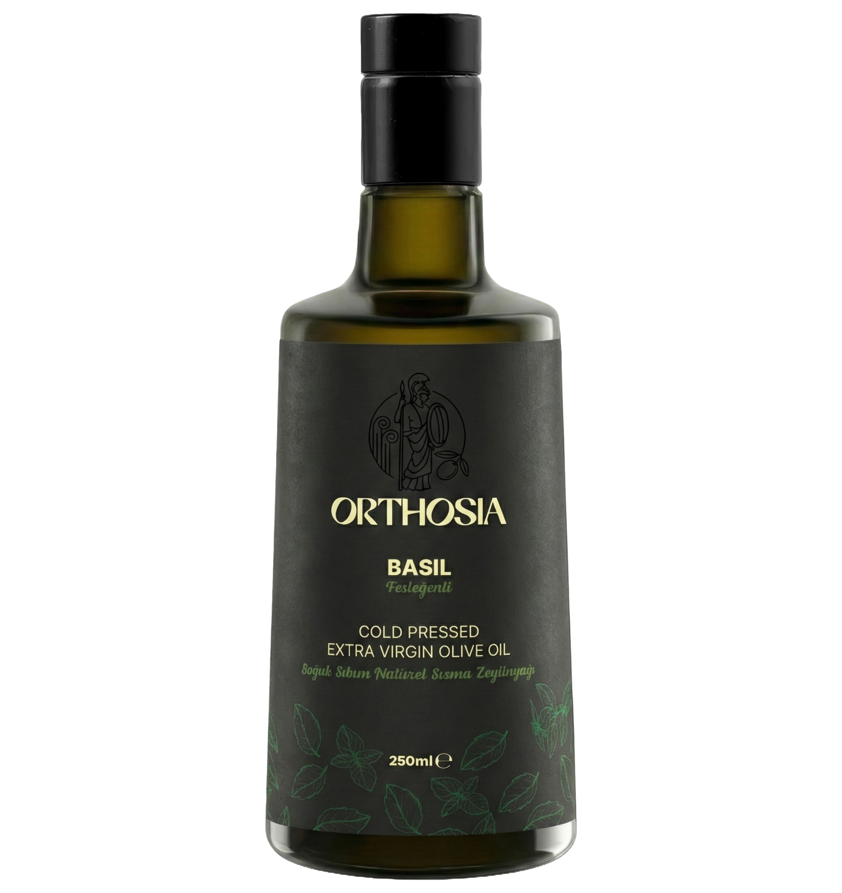

Çeşnili
Fesleğen Çeşnili
Taze fesleğen notalarıyla ferah ve modern bir profil. Yağın doğal meyvemsiliği ile birlikte bitkisel aromanın temiz ve dengeli bir birleşimi.
Detaylı Bilgi
Fesleğen Çeşnili seri; taze fesleğenin aromatik canlılığını, zeytinyağının doğal yapısıyla birlikte aynı anda yakalar. Bitkisel notalar belirgindir ancak yağın dengesi korunur.
Servis önerisi: caprese salata, bruschetta, makarna, pizza, beyaz peynir ve soğuk sandviçler. Özellikle yaz mutfağında hafif ve aromatik bir dokunuş sağlar.